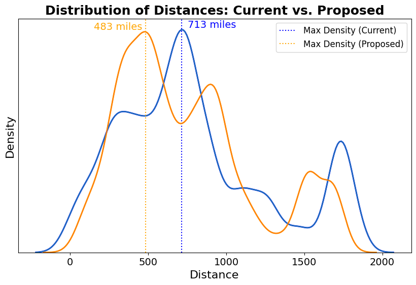

Rice University TA & M.S. Candidate
Ramon G. Cholico
Global Supply Chain Executive & Data Science Specialist

Global Supply Chain Executive & Data Science Specialist
Executive leader with 20+ years optimizing global transportation networks, managing $88M+ logistics spend, and driving data-driven decisions in regulated industries. Currently completing my Master's in Engineering Management & Leadership (Data Science Focus) at Rice University.
Evaluated multi-currency EMEA freight audit solutions ($23M spend) and enforced strict data ownership/privacy governance.


Express-to-Ground mode shifts & Priority Overnight downgrades from Central Texas ($1.36M annualized savings).


Sourced direct cross-border linehaul injection with Purolator out of DFW (-19.7% cost-per-shipment).


Benchmarked four Freight Forwarders across 826 containers ($8.43M freight savings, -65%).


Unsupervised K-Means clustering on 378K+ shipments to redesign an orthopedic footwear distribution network.


Direct air-bulk and intermodal zone skipping out of San Diego to East Coast (4–6 day transit times).


Financial risk model tracking Middle East conflict diesel spikes and quantifying $271K+ in FSC exposure.


All-Boat vs. Intermodal Rail trade-off modeling across transatlantic trade lanes (-21 days transit time).